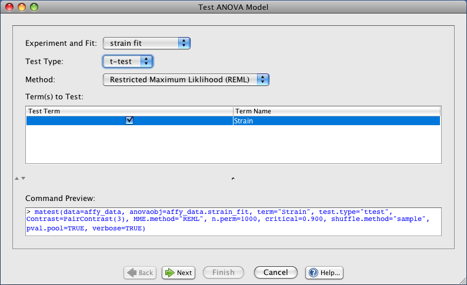

After you fit a model you can test model terms. In order to test a term start by selecting Analysis->Test ANOVA Model... which displays a graphical interface to R/maanova's matest(...) function.

Initial Settings Panel
Experiment and Fit: select the model fit that we should test
Test Type: the type of test to perform (t-test or F-test)
Mehod: determines if a Restricted Maximum Liklihood (REML) or Maximum Liklihood (ML) algorithm is used
Term(s) to Test: select one or more terms to test
The contrast matrix panel will only appear if you set the Test Type to t-test in the initial settings panel.
Contrast Matrix Panel
Test All Pairwise Contrasts: selecting this option tells J/maanova to test all pairwise contrasts (this saves you the work of specifying this contrast). The number of tests for this option will be a function of the number of levels in the test term: num_levels * (num_levels - 1) / 2
Test With Custom Contrast Matrix: this option allows you to specify a custom contrast matrix where each row of the matrix specifies a new contrast to test. To add a new test row click the Add Test button and to remove a test row click the Remove Test button
Final Panel
Name Your Test Result: the name to use for test results. This name will appear in your projects data tree
Perform Permutations: select this checkbox and enter a permutation count if you want your test to include permutation p-values. Please note that a high permutation count can cause your test to run for a very long time. You should start with a small number (or no permutations at all) to get a feel for how much time it takes before running many permutations.
Critical F-distribution Quantile: only enabled for permutations. Quantile of F-distribution used to get a subset to calculate p-value (ranges from 0.0 to 1.0)
Data Shuffling Method: only enabled for permutations. Select Sample shuffling or Residual shuffling
Use Pooled Permutation F statistics: determines whether J/maanova should use pooled permutation F values to calculate p-values
Print Verbose Output: determines if verbose output will be printed to the terminal window at the bottom of the screen while the test is being performed